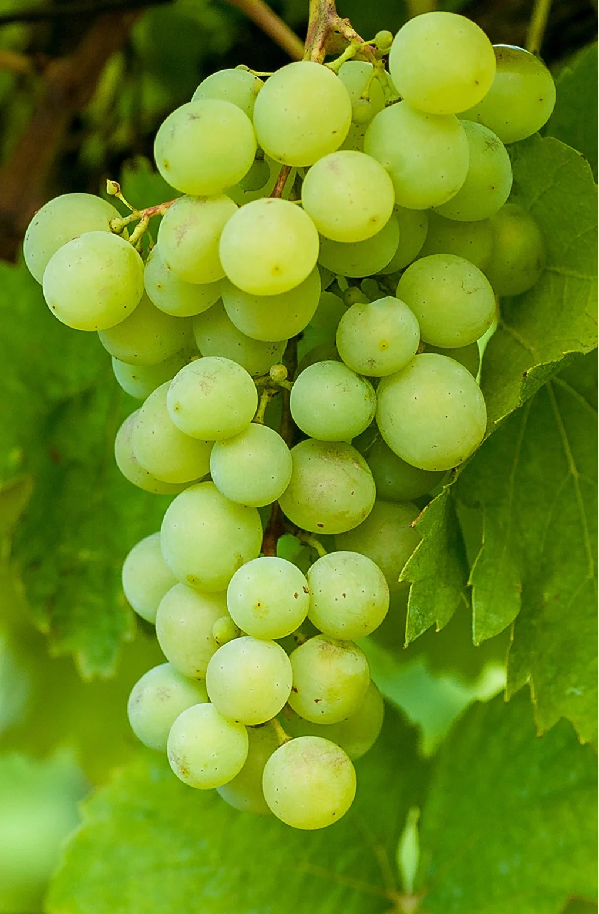
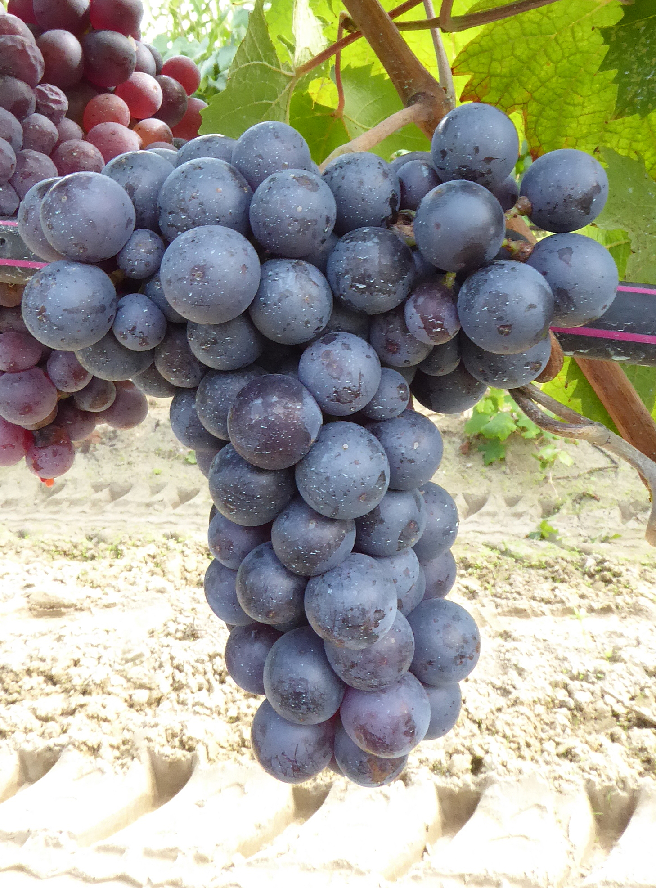
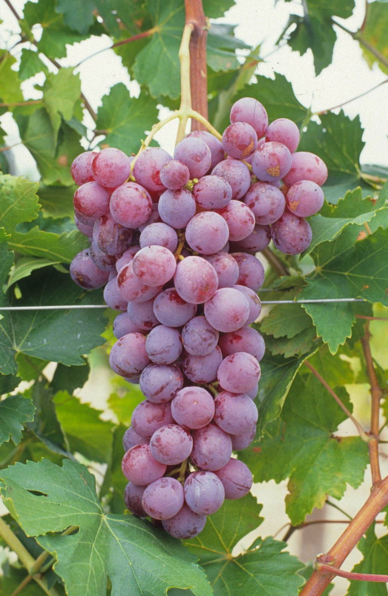

El cultivo de la uva comenzó hace más de 6,000 años en la región del Mediterráneo y el Oriente Medio. A lo largo de la historia, las civilizaciones griega y romana impulsaron su expansión, convirtiendo a la viticultura en un pilar fundamental de su cultura y economía.
Son reconocidas por su alto contenido de antioxidantes, especialmente el resveratrol, presente principalmente en la piel de las uvas tintas. Este compuesto ayuda a proteger la salud cardiovascular y combatir el envejecimiento celular de forma natural.
Además de disfrutarse al natural o en jugos, las uvas pueden deshidratarse para transformarse en pasas. Su jugo fermentado da lugar a una inmensa variedad de vinos que marcan la tradición gastronómica de diversos países alrededor del mundo.
Variedades de Uvas

Thompson Seedless
Uva verde sin semillas, muy crujiente y dulce. Es la variedad más consumida en fresco y la más utilizada para elaborar pasas.

Uva Negra Ribier
De piel oscura y firme, caracterizada por un sabor intenso, pulpa carnosa y alta concentración de resveratrol.

Red Globe
Variedad de grano grande y color rojo brillante, muy cotizada como uva de mesa por su textura jugosa y gran tamaño.